Docker真是一个好东西啊:-)，让我终于摆脱了大一年级时安装环境的苦恼，安装错误的乱七八糟的环境残留，就像是做了一桌满汉全席后的厨房，连收拾都不想收拾，久而久之，电脑的环境真是乱七八糟。
DockerBasicKnowledge
Docker概念
Docker 是一种开放平台， 用于开发、 发布和运行应用程序。 它的主要功能 是将应用程序与基础架构分离， 以便快速交付软件。 通过 Docker， 用户可以像 管理应用程序一样管理基础架构， 这样就能够显著减少编写代码和在生产环境中 运行之间的延迟。 以简单的方式来说， Docker 就像是一个虚拟机， 但是更轻量、 更具可移植 性。 用户可以将应用程序、 代码库、 编译工具以及构建运行环境都放在一个称为 容器的独立单元中。 将整个 Docker 容器从源主机搬运到目标机上， 即可完成程 序的发布， 省去了重新构建运行环境的复杂过程和时间。 另外， 容器之间完全使 用沙箱机制进行隔离， 相互之间没有任何接口， 同时具有极低的性能开销。 Docker 提供了工具和平台来管理容器的整个生命周期：
-
在容器中开发 应用程序及其支持组件。
-
将容器作为分发和测试应用程序的单元。
-
准 备就绪后， 将应用程序部署到生产环境中， 无论是本地数据中心、 云提供商还是 两者的混合， 都能够以容器或编排服务的形式进行部署。 这种隔离和安全性的方法使得用户能够在给定的主机上同时运行多个容器， 实现更高效的应用程序开发、 测试和部署。
Docker组成
-
客户端： Docker 客户端是用户与 Docker 引擎进行交互的工具。 通过 Docker 客户端， 用户可以使用命令行界面（CLI） 或 API 向 Docker 服务端发送指令， 执行各种操作， 如创建、 管理、 监视容器和镜像等。 客户端可以运行在任何支持 Docker 的环境中， 如本地开发机器、 云服务器等。
-
服务端： Docker 服务端是运行在宿主机上的 Docker 引擎， 负责管理容器、 镜像、 网络和存储等资源。 服务端包括了 Docker 守护进程（Docker Daemon） 和 Docker REST API。 Docker 守护进程监听来自客户端的请求， 并相应地执行操作， 同时管理宿主机上的各种容器和镜像。
-
镜像：Docker 镜像是用于创建容器的只读模板， 包含了运行应用程序所需 的所有文件、 库、 环境变量和配置。 镜像可以被构建、 共享、 推送和拉取到 Docker 仓库中。 镜像是 Docker 容器的基础， 用户可以基于现有的镜像创建新的容器实 例， 实现应用程序的快速部署和扩展。
-
镜像仓库： Docker 仓库是用于存储和分享 Docker 镜像的中央存储库。 它 可以是公共的（Docker Hub） 也可以是私有的（企业内部的 Registry） 。 在仓库 中， 用户可以搜索、 浏览、 下载和上传 Docker 镜像。 仓库为用户提供了方便的 方式来共享、 分发和管理 Docker 镜像， Docker 的默认镜像仓库是 Docker Hub。出于某些特色原因，我们无法直接访问
DockerHub，也无法直接Docker pull拉取镜像，直接会超时。您可以参考https://zephyr369.online/dockerpull/来优雅地赢应对。 -
Docker容器： Docker 容器是 Docker 镜像的运行实例， 具有独立的文件系统、 网 络和进程空间。 容器可以被创建、 启动、 停止、 删除或移动， 具有轻量级、 可移 植和隔离的特性。 容器提供了一种一致的运行时环境， 可以在不同的环境中运行 应用程序， 同时保持环境的一致性和可重复性。
综上所述， 客户端和服务端是 Docker 运行时的两个核心组件， 镜像是创建 容器的只读模板， 仓库是存储和分享镜像的中央存储库， 容器是镜像的运行实例， 它们共同组成了 Docker 生态系统， 为用户提供了便捷、 高效的容器化解决方案。
Docker基本教程
市面上常见的Docker教程：
Docker基本命令
构建镜像
以本次实验为例，我们用python=3.10环境为基础编写了一个UDPClientServer.py的程序，我们在项目目录的根目录下创建一个Dockerfile,然后在下面配置需要的依赖。例如
ARG APP_PORT=5678
ARG ADDITIONAL_STRING="this is a default string for transporting"
# python env
FROM python:3.10
# 工作目录
WORKDIR /app
COPY . /app
ENV APP_PORT=$APP_PORT
ENV ADDITIONAL_STRING=$ADDITIONAL_STRING
# 暴露端口（服务端用）
EXPOSE $APP_PORT
# 设置默认的命令
CMD ["python", "udp_client_server.py"]
其中我们可以用ARG 的方式来声明变量，然后用$XX的方式来进行引用。
然后我们可以运行docker build -t <name> .，其中<name>是你打算给你要构建的镜像取的名字。.表示指定 Dockerfile 的位置，这里是当前目录。
将一个Docker镜像实例化为一个容器并且运行
我们可以通过docker image ls来查看目前我们都有哪些镜像，例如笔者电脑下面的镜像有
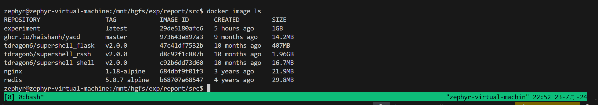
然后我们可以运行
docker run -d <host-port>:<container-port> --name <container-name> <argsxxxxxx>
其中-d表示我们让这个容器后台运行，host-port是你主机的端口，container-port是这个容器的端口，比如我们本机手里有一个运行在3306端口下的MYSQL服务器，然后学习一个学校的专业课还非对你的数据库大搞特搞，你不希望把你原本的数据库搞得跟西游记里的盘丝洞一样乱，那么你就可以用docker起一个mysql服务器，然后在端口中设置5555:3306，这样我们容器中的3306端口就会被映射到主机的5555端口，然后我们用navicat或者什么其他的软件来连接<host>:5555就可以愉快使用了。
此外，我们可以用参数-it来实现进入这个容器的终端，例如docker run -it ubuntu /bin/bash，这是因为-i表示交互式操作，-t表示终端，ubuntu是我们pull下来的一个ubunut的镜像，/bin/bash自然是ubuntu的交互式shell。退出终端exit即可。
对运行的容器进行操作
我们可以用docker ps -a来查看现在运行的容器的状态。
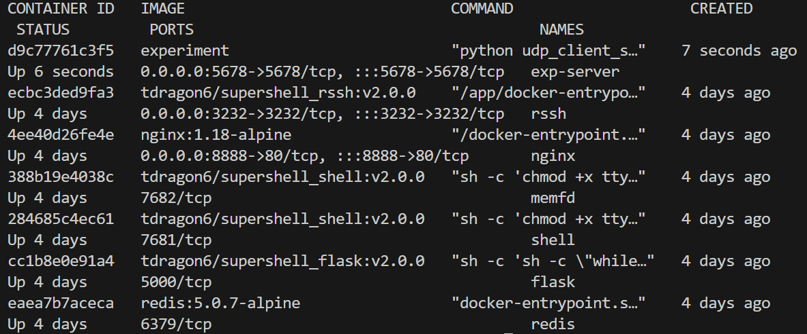
然后我们可以用docker logs <container-name>来查看这个容器的日志，比如您有一个容器中有一个hello.c，里面会输出一个hello wolrd，那我们运行这个logs后，就会在shell中显示hello world
此外，我们可以用server_ip=$(docker inspect -f '{{range.NetworkSettings.Networks}}{{.IPAddress}}{{end}}' <container-name>)来获得这个容器的ip，然后可以在后续的shell中直接$server_ip拿到这个容器的ip
当我们希望和某一个容器的shell交互的时候，我们有两种方式
- docker attach
- docker docker exec -it /bin/sh
注意：当我们使用第一种方法退出容器的时候，会导致当前容器停止，需要后续手动启动
因此笔者推荐使用的第二种方式。
我们使用docker stop/start <container-name>来停止/启动一个容器。
删除
对于容器的删除可以使用docker remove <container-name>来删除，需要该容器处于停止状态，也可以使用-f参数来强制删除。（笔者在本次实验中多次反复删除容器，偷懒便直接强制删除）
删除镜像则需要docker rmi <image>
与DockerHub交互
首先需要docker login，输入您的账户和密码来登录DockerHub,然后将您的镜像重命名以符合规定，一般是
docker tag oldname:latest <your-dockerhubname>/<image-name>:<tag>
最后docker push
服务测试实验
实验内容
摸了，直接放实验文档
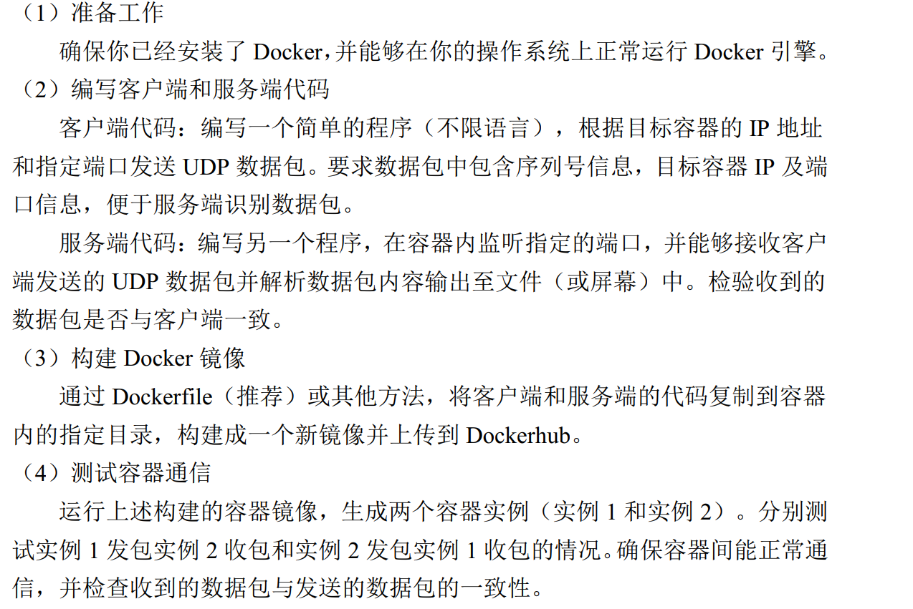
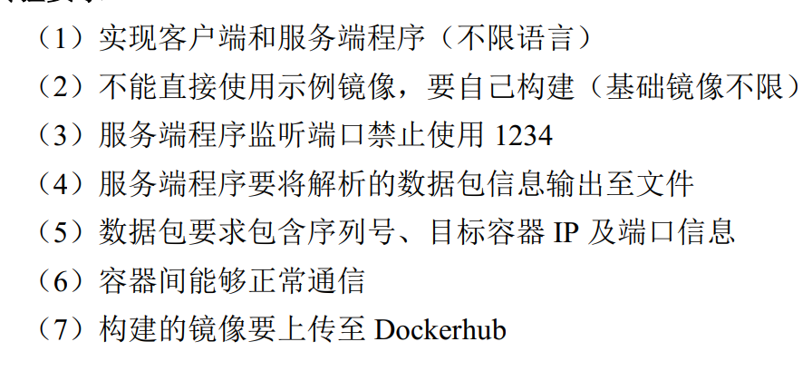
实验过程
客户端与服务端实现
UDP是一个无连接协议，服务端通过监听某个端口，并只接受对应端口的UDP数据包，而忽略不是这个端口的数据包。
在实现的过程中，我们使用python的socket包来实现，并将服务端的接收数据和客户端发送数据的函数都封装在一个类中，通过运行程序时的参数来区分程序作为服务器还是客户端。
我们将各种参数，包括但不限于目的host，来源host，目的端口，来源端口封装在config属性中，然后利用mode来区分作为客户端还是服务端
def __init__(self, mode, config):
# 配置
self.config = config
# server ? client
self.mode = mode
编写服务端接口，首先我们可以读取到host和port，让服务器监听这个对应的端口,利用socket绑定对应的的地址和端口，实现监听，然后当收到数据的时候，来将data解析并保存，同时解析出来源的ip和端口，并最终用日志的方法存储。
def start_server(self):
# default host is 0.0.0.0
host = self.config.get('host', '0.0.0.0')
port = self.config.get('port', 6666)
output_file = self.config.get('output_file', 'data.log')
with socket.socket(socket.AF_INET, socket.SOCK_DGRAM) as server_socket:
# ipv4 udp
server_socket.bind((host, port)) # 绑定套接字到指定端口和ip
print(f"Server listening on {host}:{port}")
while True:
data, addr = server_socket.recvfrom(_size)
print(f"Received data from {addr}\n{data}")
parsed_data = self.parse_data(data)
with open(output_file, 'a') as f:
f.write(f"{parsed_data}\n")
发送数据也是需要先配置好自己的host和port，然后我们用python的dict数据类型来维护一个包含序列号``目标Ip``目标端口``数据的四元组，然后将他利用json.dump的方法转储为一个json格式的数据，并将其利用socket发送给服务端。
def send_data(self):
host = self.config.get('host', '127.0.0.1')
port = self.config.get('port', 5678)
start_sequence_number = self.config.get('sequence_number', 1)
num_messages = self.config.get('num_messages', 5) # Number of messages to send
target_ip = self.config.get('target_ip', '192.168.1.1')
target_port = self.config.get('target_port', 5555)
additional_string = self.config.get('additional_string', 'hello world')
with socket.socket(socket.AF_INET, socket.SOCK_DGRAM) as client:
for i in range(num_messages):
sequence_number = start_sequence_number + i
data_dict = {
"sequence_number": sequence_number,
"target_ip": target_ip,
"target_port": target_port,
"data": additional_string,
}
data_json = json.dumps(data_dict) + ',' + additional_string
client.sendto(data_json.encode(), (host, port))
print(f"Sent data to {host}:{port} with sequence number {sequence_number}")
time.sleep(1) # 等待一秒钟再发送下一个数据包
解析数据成员
首先将字符串解析成json格式，然后将他转换为dict，然后通过索引的方式拿到序列号``目标Ip``目标端口``数据数据，并最后返回一个格式化字符串
def parse_data(self, data):
data_str = data.decode()
data_json, additional_string = data_str.rsplit(',', 1)
data_dict = json.loads(data_json)
sequence_number = data_dict["sequence_number"]
target_ip = data_dict["target_ip"]
target_port = data_dict["target_port"]
_string = data_dict["data"]
return f"Sequence Number: {sequence_number}, Target IP: {target_ip}, Target Port: {target_port}, Additional String: {additional_string}"
参数识别与转换
首先需要实例化一个parser,然后根据参数设置mode和config，并根据这两个的值来实例化一个udp_client_serve对象。
if __name__ == "__main__":
parser = argparse.ArgumentParser(description='UDP Client/Server')
parser.add_argument('mode', choices=['client', 'server'], help='Mode to run the program in')
parser.add_argument('config', help='Configuration as a string representing a dictionary')
args = parser.parse_args()
mode = args.mode
config = eval(args.config) # Convert string to dictionary
udp_client_server = UDPClientServer(mode, config)
udp_client_server.run()
def run(self):
if self.mode == 'server':
self.start_server()
elif self.mode == 'client':
self.send_data()
else:
raise ValueError("Mode must be either 'server' or 'client'")
编写Dockerfile
我们需要pull一个python基础环境，然后将/app设置为基本目录，然后将当前所有文件(其实只有一个udp_client_server.py文件)拷贝到/app目录下，并设置默认的命令。
# python env
FROM python:3.10
# 工作目录
WORKDIR /app
COPY . /app
# 暴露端口（服务端用）
EXPOSE 5678
# 设置默认的命令
CMD ["python", "udp_client_server.py"]
使用
Docker Build
首先我们需要创建一个将当前的代码build为一个docker镜像。
docker build -t experiment .
然后查看
运行服务端和客户端
启动服务端
首先输入
docker run -it -d -p 5678:5678 --name exp-server experiment python udp_client_server.py server "{'host': '0.0.0.0', 'port': 5678, 'output_file': 'data.log'}"
创建一个docker容器，监听5678端口，同时将输出文件设置为output_file
输入docker ps查看
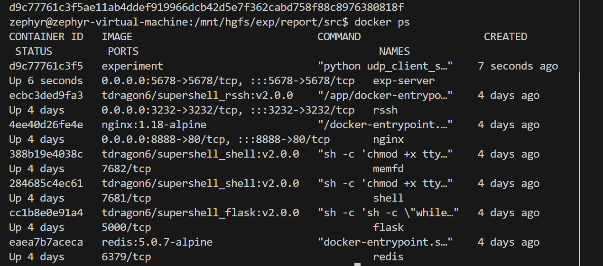
然后输入docker logs exp-server查看当前容器的输出
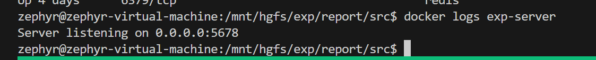
工作正常
启动客户端
输入
server_ip=$(docker inspect -f '{{range.NetworkSettings.Networks}}{{.IPAddress}}{{end}}' exp-server)
获得exp-server容器的ip
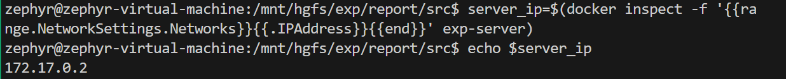
可以看到exp-server的ip是172.17.0.2
然后我们输入
docker run --name exp-client experiment python udp_client_server.py client "{'host': '$server_ip', 'port': 5678, 'sequence_number': 1, 'target_ip': '$server_ip', 'target_port': 6666, 'additional_string': 'hello world', 'num_messages': 10}"
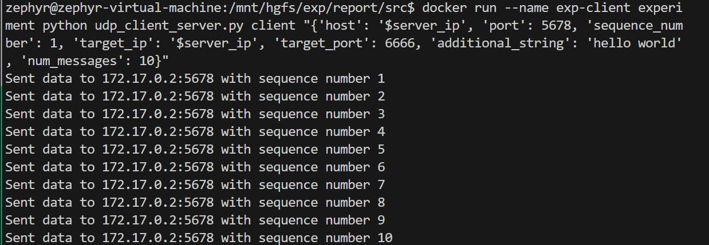
查看服务端的输出
客户端的输出已经直接展示到stdout中了，我们只需要查看服务端即可。
我们输入
docker exec -it exp-server /bin/sh
来开一个exp-server下的shell，并将他放到当前linux的shell的前端用于实时交互。
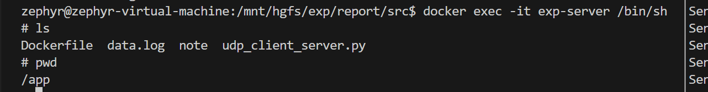
得到下面结果
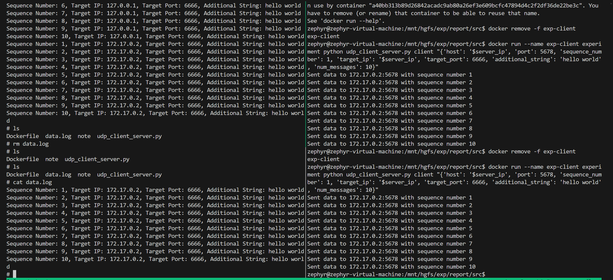
推送到DockerHub
首先登录自己的docker账号
然后吧自己的image规范化命名
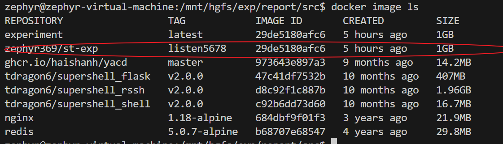
总结与反思
由于整个项目比较简单，而且目的是让我们熟悉docker的使用教程，因此直接用很长的命令来执行
实际上可以编写一个docker-compose.yaml配置文件来方便的进行配置
version: '3'
services:
server:
image: experiment
container_name: server-container
command: ["server", "{'host': '0.0.0.0', 'port': 5678, 'output_file': 'data.log'}"]
ports:
- "5678:5678"
client:
image: experiment
container_name: client-container
command: ["client", "{'host': 'server-container', 'port': 5678, 'sequence_number': 1, 'target_ip': 'server-container', 'target_port': 5678, 'additional_string': 'hello world', 'num_messages': 10}"]
然后每次可以docker-compose up和docker-compose down就可以方便的开启和关闭。
此外，只是为了演示数据传递的过程，正常的字符串应当进行裁切，在项目中用一个_size来控制，便于以后扩展。
注：演示视频中第一次data.log中有多次数据，是因为在最初build的时候将原来的测试的日志也放进去了